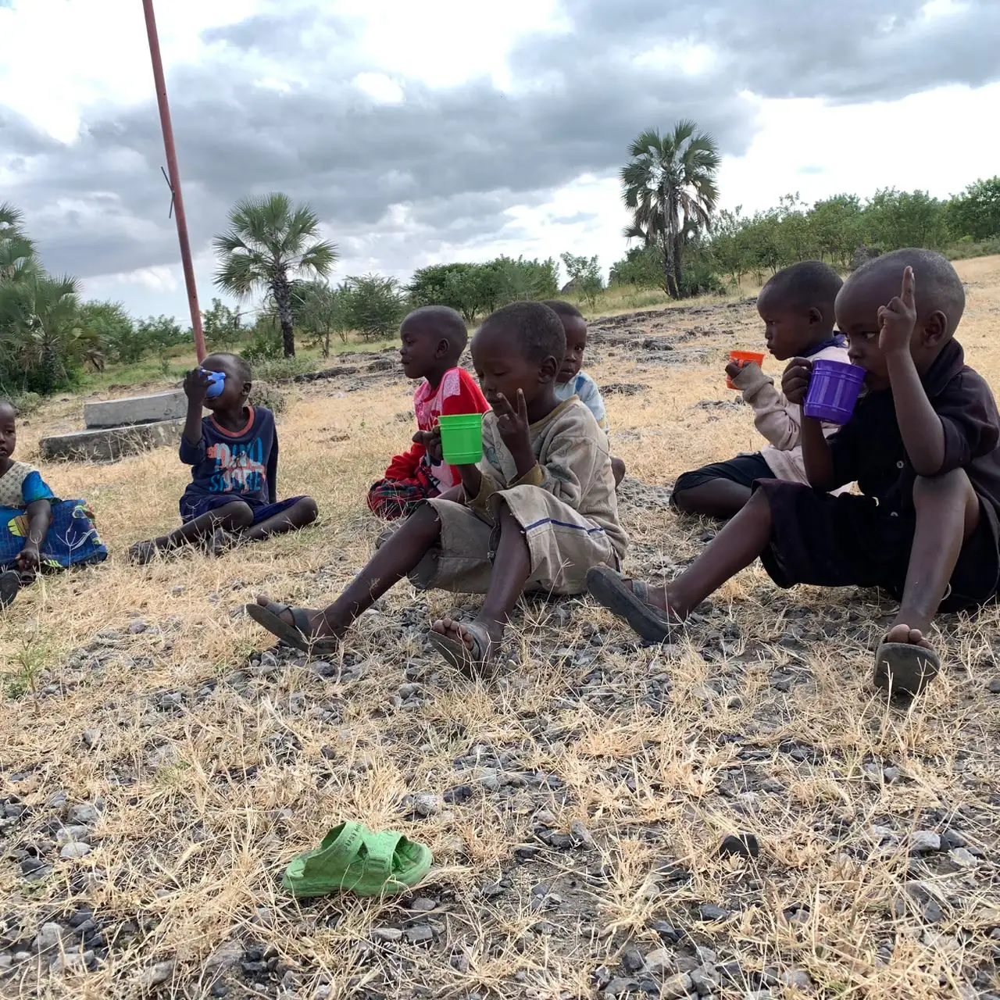
Latest post
Feeding Program — Week by Week
See our daily porridge program in action and how it supports the children who attend.
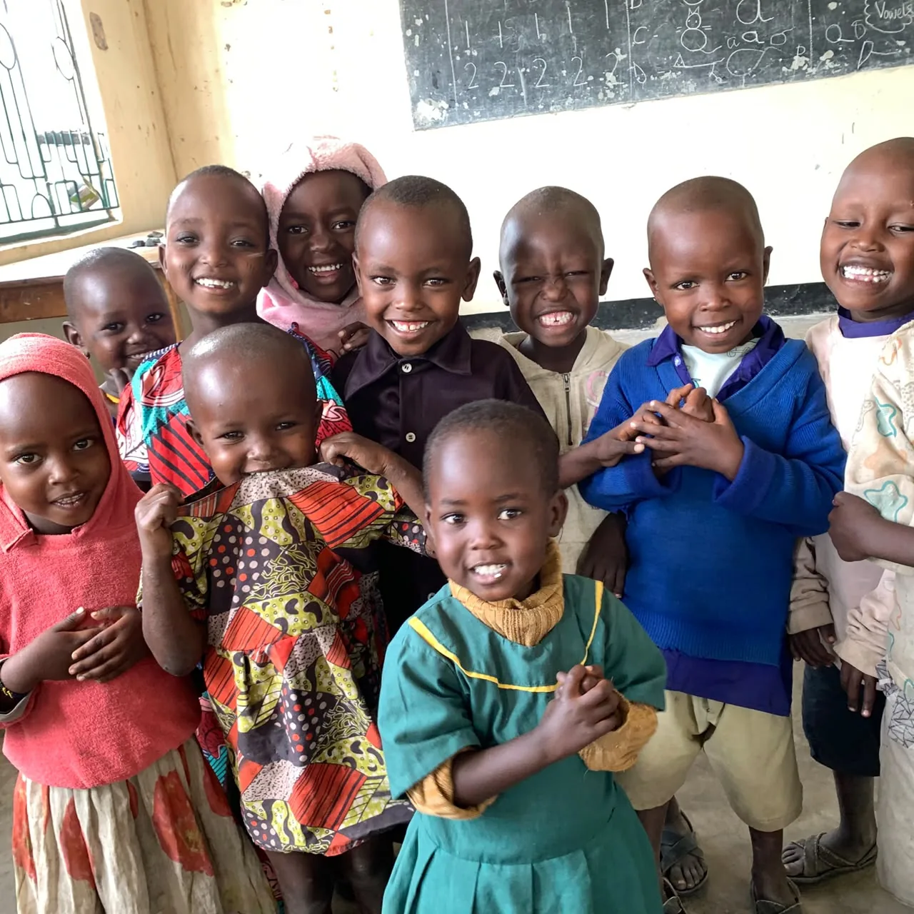
Empowering Maasai children through quality early childhood education, nutritious meals and community-led development — helping every child learn, grow and reach their full potential.
Nasaru Child Foundation is a community-led organisation founded by Marina Laizer in Oltukai Village, Monduli District, Arusha Region, Tanzania.
Marina saw that many children in her community were missing out on education because of barriers such as poverty, long distances to school and limited access to early learning.
Nasaru was created to help change this.
Today, we provide a safe and welcoming place where children aged approximately two to ten can learn, play, receive a nutritious meal and begin building the skills they need for school and beyond.
Working alongside families and the local community, Nasaru is creating more opportunities for children to begin learning from an early age.
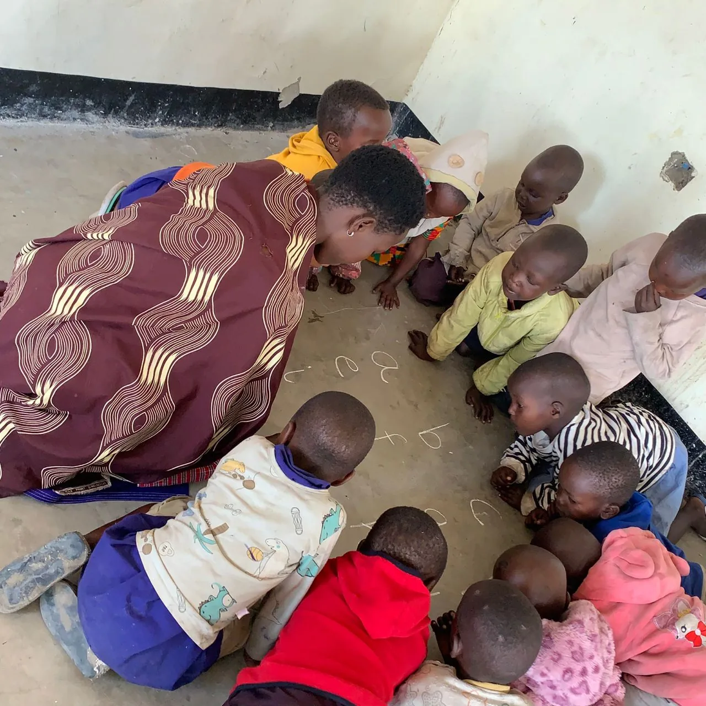
Learning together in the community provided space Nasaru uses today.
With the support of our local community, Nasaru currently operates from a community-provided learning space where children come together to learn, play and receive a nutritious daily meal.
What exists today is just the beginning.
For many children in Oltukai and surrounding Maasai communities, accessing education can be difficult.
Poverty, long distances to school, overcrowded classrooms and limited access to early childhood education can mean some children do not begin primary school until they are eight to ten years old.
The early years are an important time in a child’s development. They are when children begin developing communication and social skills, confidence, curiosity and a readiness to learn.
Starting school later can make it harder for children to adjust to the classroom and catch up with learning. For families experiencing financial hardship, children may also take on work or other responsibilities to help support their families. Without accessible education close to home, some children may miss out altogether.
Nasaru is working to address these barriers by bringing early learning closer to home and giving children the chance to begin their education earlier.
When children have the chance to learn, they have more choices for what their future can become.
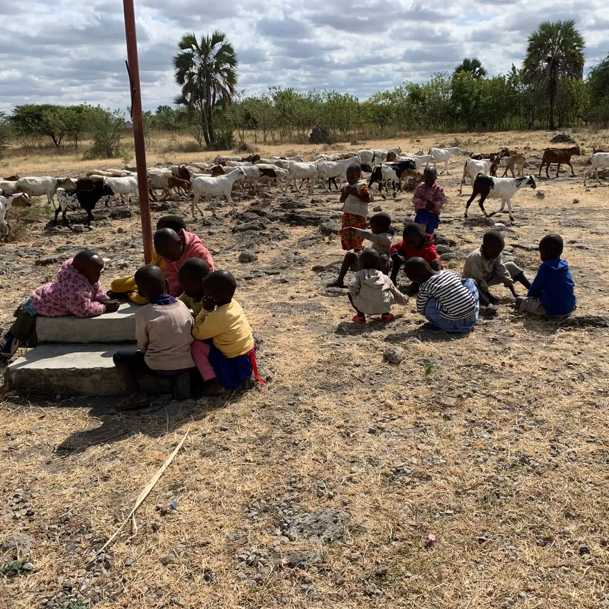
Lessons happen wherever there is space, on open ground beside the grazing herds.
A future where every child has access to quality early education, protection and opportunities to reach their full potential.
To empower vulnerable children and underserved communities by providing quality early childhood education, promoting child wellbeing and implementing sustainable community development programs.
Everything we do at Nasaru is centred around the education, wellbeing and development of children.
Early learning for children aged approximately two to ten, helping prepare them for primary school.
A welcoming environment for young children while we work towards permanent classrooms and child-friendly facilities.
Nutritious porridge for every child who attends, supporting wellbeing and regular attendance.
Working alongside parents, families and local leaders to strengthen understanding of the importance of the early years.
Play, reading, storytelling and creative activities that build confidence, curiosity, communication and social skills.
Working with families and the wider community to promote children’s safety, wellbeing and protection.
Nasaru has started with a community-provided learning space, one volunteer teacher and a commitment to the children and families of Oltukai.
Now, we need your help to give our children more of the resources they need to learn.
Funds raised will strengthen Nasaru’s early childhood education program and improve the children’s everyday learning environment.
Donations will help us provide:
Nasaru does not yet have established funders, which means every contribution, large or small, can make a meaningful difference.
We are committed to using donations carefully and transparently and sharing updates so supporters can see how funds have been used and what their generosity has helped provide.
Your support can help put books in children’s hands, provide the materials they need to learn, and give Nasaru the resources to reach more children.
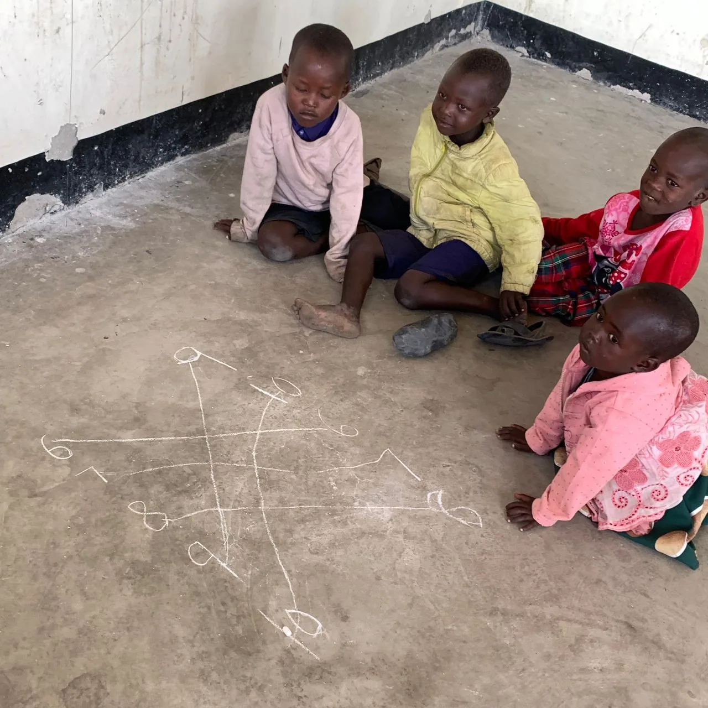
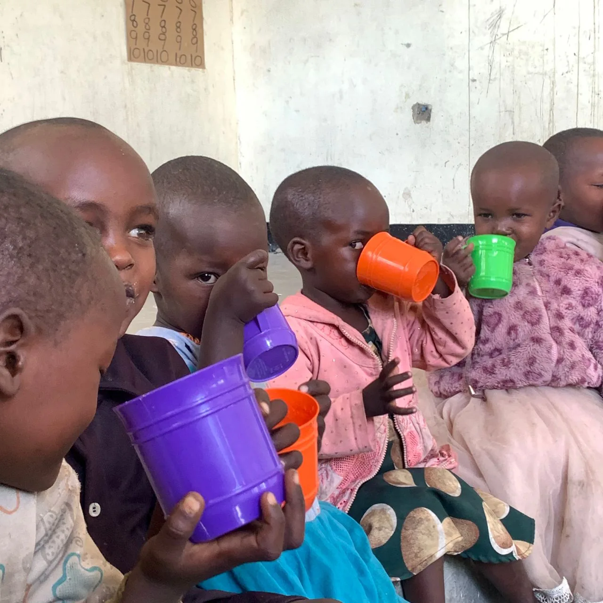
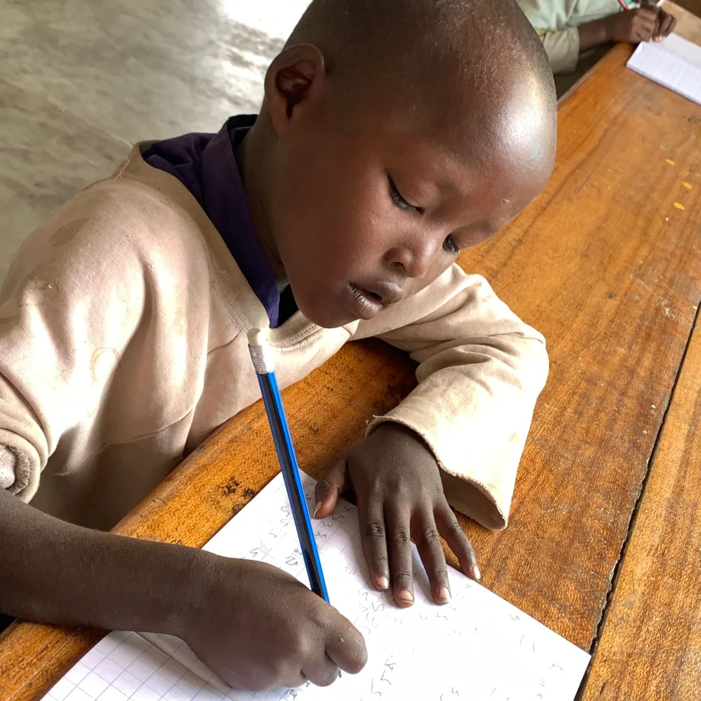
Nasaru’s long-term vision is to create a dedicated early childhood learning centre in Oltukai Village where more children can begin their education close to home.
With the support of donors and the local community, we hope to build permanent, well-equipped classrooms and child-friendly toilets, support teachers trained in early childhood education, and create a sustainable learning environment that can serve children for years to come.
As Nasaru grows, our goal is to welcome more than 100 children from Oltukai and surrounding communities.
Our long-term dream is to establish a primary school, allowing children to continue their education within their own community as they grow.
From one small learning space, we hope to build something that will benefit children and families for generations to come.
“A better foundation builds a better future.”
Marina Laizer, Founder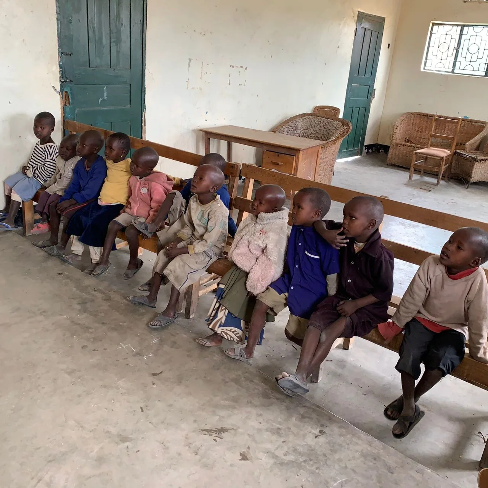
Fifteen children on borrowed benches. The reason a permanent centre matters.
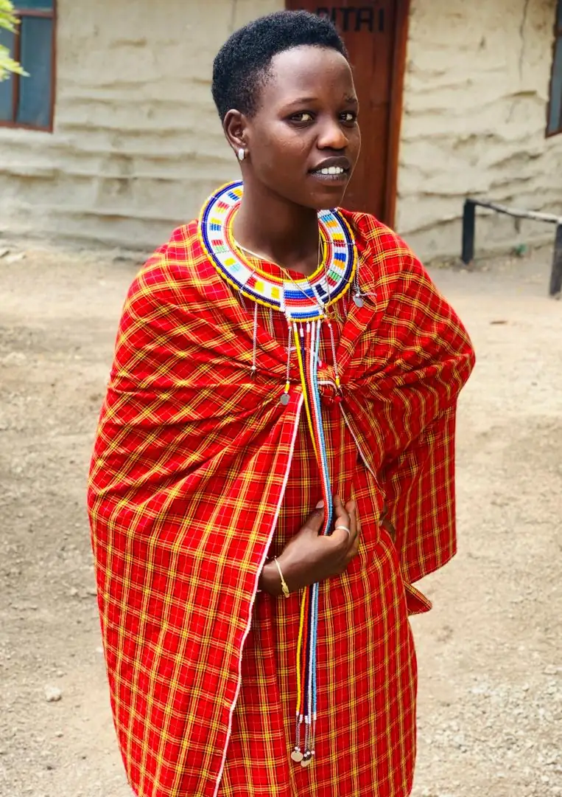
Marina’s connection to Oltukai began long before Nasaru.
At sixteen, while still in secondary school, Marina visited the village where her mother was born. She saw first-hand that many children were not attending school and that educational opportunities were particularly limited for girls.
The experience stayed with her.
Years later, Marina returned while studying Early Childhood Development Education. After completing her diploma, she became a teacher, gaining the knowledge and experience that would eventually help her turn an idea she had carried for years into something real.
Each time she returned to the community, she found herself asking the same question:
“How can I help my community?”
Nasaru became her answer.
As a Maasai woman, educator and member of the community, Marina understands both the barriers families face and the potential she sees in the children around her.
Today, she is building Nasaru alongside her community — creating a place where children can learn, feel supported, develop confidence and discover what they are capable of.
For Marina, Nasaru is more than an early learning centre. It is a way of investing in her community and creating possibilities for the next generation of Maasai children.
Nasaru is built on community and teamwork. These are the people working alongside Marina to guide the foundation as it grows.
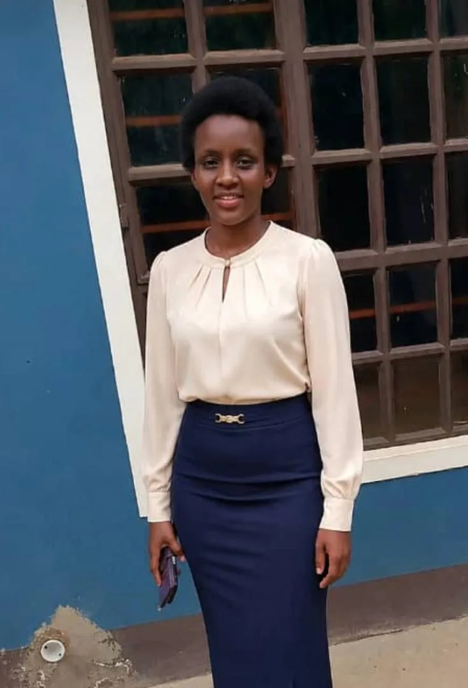
There are many ways you can help Nasaru grow. Whether you give your time, share your skills, build a partnership or raise funds, your support can help us reach more children in Oltukai.
Above all, we welcome people who respect Maasai culture, value community-led change and are willing to work alongside local people.
We welcome volunteers who can contribute their experience, knowledge, time or enthusiasm.
You don’t need professional expertise to contribute. We also welcome people who are willing to share their time, creativity and ideas.
We would love to build long-term partnerships with schools, businesses, NGOs, foundations, education organisations and professionals who share our vision.
Partnerships may include expertise, educational resources, materials, funding or ongoing support. We believe the strongest partnerships begin by listening to what the community needs and working together towards shared goals.
You can support Nasaru by organising a fundraiser through your school, workplace, community group or network, or simply by sharing our story with others.
We will share photographs and updates from Nasaru so you and the people supporting your fundraiser can see the difference your contribution is helping to make.
Marina shares regular updates from Oltukai, giving supporters a glimpse into everyday life at Nasaru and the progress being made.

See our daily porridge program in action and how it supports the children who attend.
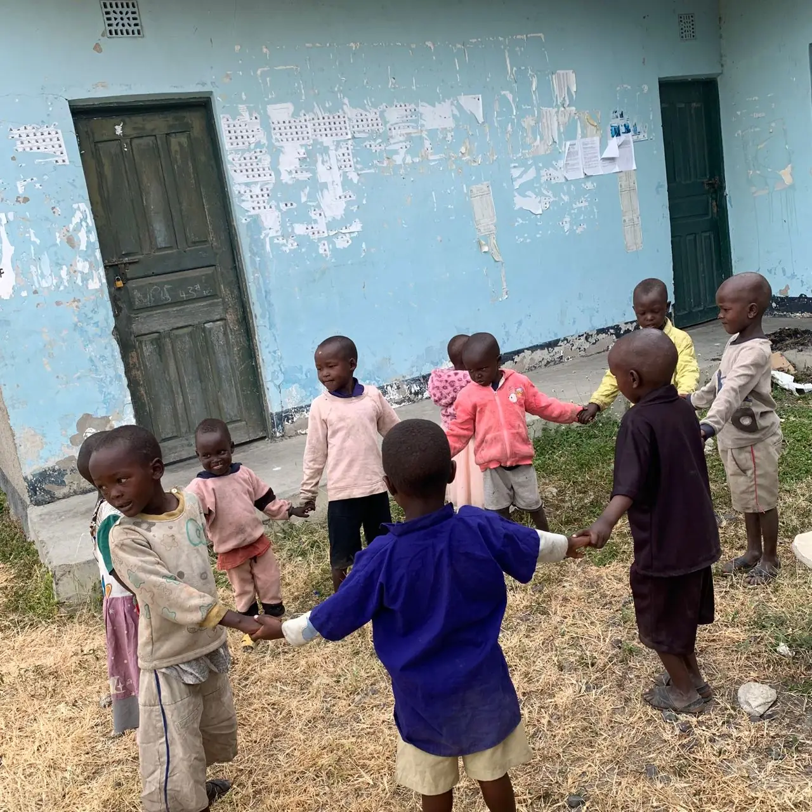
Follow everyday learning through numbers, reading, play and creative activities.
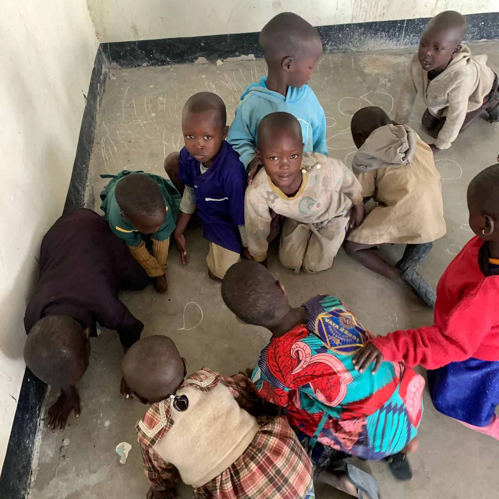
Hear directly from Marina about why she created Nasaru and her hopes for the children and the future of the foundation.
Whether you would like to volunteer, partner with Nasaru, make a donation or simply learn more about our work, we would love to hear from you.
When you contact Nasaru, you’ll be speaking directly with the person leading the work in Oltukai.